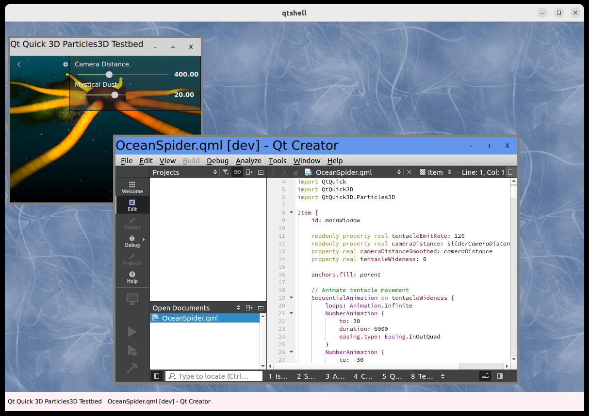

QtShell Compositor
QtShell Compositor shows how to use the QtShell shell extension.
QtShell Compositor is a desktop-style Wayland compositor example implementing a complete Qt Wayland Compositor which uses the specialized shell extension protocol called QtShell.

The compositor is implemented with Qt Quick and QML.
Making the Connection
The example lists QtShell as the only extension to the WaylandCompositor object. This means that any client connecting to the server must also support this extension, thus they should be Qt applications running against the same version of Qt as the compositor.
QtShell { onQtShellSurfaceCreated: (qtShellSurface) => screen.handleShellSurface(qtShellSurface) }
When a client connects to the QtShell interface, it creates a QtShellSurface. The compositor is notified of this by the emission of the qtShellSurfaceCreated signal. The example then adds the shell surface to a ListModel for easy access later.
property ListModel shellSurfaces: ListModel {} function handleShellSurface(shellSurface) { shellSurfaces.append({shellSurface: shellSurface}); }
The ListModel is used as the model for a Repeater which creates the Qt Quick items required to display the client contents on screen.
Repeater { id: chromeRepeater model: output.shellSurfaces // Chrome displays a shell surface on the screen (See Chrome.qml) Chrome { shellSurface: modelData onClientDestroyed: { output.shellSurfaces.remove(index) } } }
It uses the local Chrome type, which handles window states and decorations.
Chrome
The Chrome is the type that ensures the client contents are visible and also handles window state, position, size, and so on. It uses the built-in QtShellChrome as a basis, which automatically handles window state (maximized, minimized, fullscreen) and window activation (ensuring that only a single window is active at the time).
Its behavior can be customized to some extent, but it is also possible to write the Chrome functionality from scratch, building from a basic Item type instead. QtShellChrome is a convenience class which provides typical compositor behavior, and saves us the time of implementing this logic in the example.
However the Chrome is written, it should have a ShellSurfaceItem to hold the client contents.
ShellSurfaceItem { id: shellSurfaceItemId anchors.top: titleBar.bottom anchors.bottom: bottomResizeHandle.top anchors.left: leftResizeHandle.right anchors.right: rightResizeHandle.left moveItem: chrome staysOnBottom: shellSurface.windowFlags & Qt.WindowStaysOnBottomHint staysOnTop: !staysOnBottom && shellSurface.windowFlags & Qt.WindowStaysOnTopHint } shellSurfaceItem: shellSurfaceItemId
The ShellSurfaceItem is the visual representation of the client's contents in the Qt Quick scene. Its size should usually match the size of the client's buffer, otherwise it may look stretched or squeezed. QtShellChrome will automatically be sized to the QtShellSurface's windowGeometry, which is size of the client's buffer plus the size of the frame margins. The frame margins are reserved areas on the sides of the Chrome which can be used to contain window decorations.
The ShellSurfaceItem is therefore anchored to the window decorations to fill the area reserved for the client buffer.
Window Decorations
The window decoration is usually a frame around a client's contents which adds information (such as a window title) and the possibility of user interaction (such as resizing, closing, moving the window, and so on.)
With QtShell, window decorations are always drawn by the compositor and not by the client. In order for sizes and positions to be communicated correctly, QtShell also needs to know how much of the window is reserved for these decorations. This can be handled automatically by QtShellChrome, or manually, by setting frameMarginLeft, frameMarginRight, frameMarginTop and frameMarginBottom.
For typical cases where there are resize handles around the window and a title bar at the top, it is more convenient to rely on the default frame margins. The QtShell Compositor example does this.
First, we create Qt Quick items to represent the different parts of the window's decorations. On the left side, for example, there should be a resize handle that the user can grab and drag in order to resize the window.
Rectangle { id: leftResizeHandle color: "gray" width: visible ? 5 : 0 anchors.topMargin: 5 anchors.bottomMargin: 5 anchors.left: parent.left anchors.top: parent.top anchors.bottom: parent.bottom }
We simply make this a five-pixel wide rectangle in the example, anchored to the top, bottom and left side of the Chrome.
Similarly, we add Qt Quick items that represent the right, top, bottom, top-left, top-right, bottom-left and bottom-right resize handles. We also add a title bar. When the decorations have been created and anchored correctly to the sides of the Chrome, we set corresponding properties in QtShellChrome.
leftResizeHandle: leftResizeHandle rightResizeHandle: rightResizeHandle topResizeHandle: topResizeHandle bottomResizeHandle: bottomResizeHandle bottomLeftResizeHandle: bottomLeftResizeHandle bottomRightResizeHandle: bottomRightResizeHandle topLeftResizeHandle: topLeftResizeHandle topRightResizeHandle: topRightResizeHandle titleBar: titleBar
When the decoration properties are set, the default resizing and repositioning behavior will be added automatically. The user will be able to interact with the resize handles in order to resize the window, and drag the title bar to reposition it. The frame margins of the QtShellSurface will also be set automatically to account for the size of the decorations (as long as none of the frame margins properties have been set explicitly.)
The visibility of the decorations will be handled automatically by the QtShellChrome based on the window flags of the QtShellSurface.
Window Management
As part of the decorations, it is common to have tool buttons which manage the window state and life span. In the example, these are added to the title bar.
RowLayout { id: rowLayout anchors.right: parent.right anchors.rightMargin: 5 ToolButton { text: "-" Layout.margins: 5 visible: (chrome.windowFlags & Qt.WindowMinimizeButtonHint) != 0 onClicked: { chrome.toggleMinimized() } } ToolButton { text: "+" Layout.margins: 5 visible: (chrome.windowFlags & Qt.WindowMaximizeButtonHint) != 0 onClicked: { chrome.toggleMaximized() } } ToolButton { id: xButton text: "X" Layout.margins: 5 visible: (chrome.windowFlags & Qt.WindowCloseButtonHint) != 0 onClicked: shellSurface.sendClose() } }
The visibility of each button is conditional on the window flag for that button, and when each of them is clicked, we simply call the corresponding method in QtShellChrome. The exception is the "close" button, which calls the sendClose() method in QtShellSurface. This instructs the client to close itself, and ensures a graceful shutdown of the application.
Row { id: taskbar height: 40 anchors.left: parent.left anchors.right: parent.right anchors.bottom: parent.bottom Repeater { anchors.fill: parent model: output.shellSurfaces ToolButton { anchors.verticalCenter: parent.verticalCenter text: modelData.windowTitle onClicked: { var item = chromeRepeater.itemAt(index) if ((item.windowState & Qt.WindowMinimized) != 0) item.toggleMinimized() chromeRepeater.itemAt(index).activate() } } } }
As an additional window management tool, the example has a "task bar". This is just a row of tool buttons at the bottom with the window titles. The buttons can be clicked to de-minimize applications and bring them to the front if they are obscured by other windows. Similarly to the Chrome, we use a Repeater for creating the tool buttons and use the shell surface list as model for this. For simplicity, the example does not have any handling of overflow (when there are too many applications for the task bar), but in a proper compositor, this is also something that should be considered.
Finally, to avoid maximized applications expanding to fill the area covered by the task bar, we create a special item to manage the parts of the WaylandOutput real estate that is available to client windows.
Item { id: usableArea anchors.top: parent.top anchors.left: parent.left anchors.right: parent.right anchors.bottom: taskbar.top }
It is simply anchored to the sides of the WaylandOutput, but its bottom anchor is at the top of the task bar.
In the Chrome, we use this area to define the maximizedRect of the window.
maximizedRect: Qt.rect(usableArea.x, usableArea.y, usableArea.width, usableArea.height)
By default, this property will match the full WaylandOutput. In our case, however, we do not want to include the task bar in the available area, so we override the default.